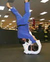

Brent Goodall
Rank: Yodan (4th dan)
Member Since: 1990
Brent made the transition from wrestler to judoka in 1990. He graduated from CSUS with BA in History in
1992 and earned his black belt in 1994.
In addition to being a competitor, he became an assistant instructor at Team Sacramento Judo in 1995.
He was promoted to sandan in 2004 and appointed Team Sacramento Head Instructor in 2006.
Since taking over as Head Instructor, Brent has grown Team Sacramento Judo to multiple locations with over
100 registered members. Under his leadership the team has produced several state and national champions.
Honors & Achievements:
- Head Instructor, Team Sacramento Judo (2006)
- 2nd - 2009 World Masters Championships
- 1st - 2008 California State Championships
- 1st - 2000 US Nationals (Masters)
- 1st - 1996 AAU Nationals
- 1st - 1995 AAU Nationals